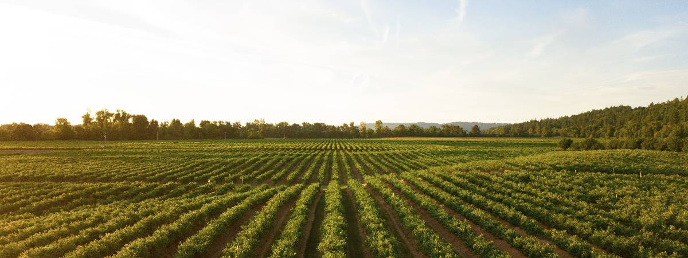

25 de Maio, 2026
Conservação de Água na Agricultura
Técnicas práticas para economizar água em sua propriedade rural enquanto mantém a produtividade.

Conheça nossa missão e valores
Somos uma organização dedicada a promover práticas agrícolas sustentáveis que beneficiam tanto os produtores quanto o meio ambiente. Com mais de 15 anos de experiência, ajudamos milhares de agricultores a implementar técnicas ecológicas.
Anos de Experiência
Agricultores Assistidos
Hectares Sustentáveis

Soluções completas para sua propriedade rural
Fonte de Principais Alimentos
As hortas orgânicas protegem a água, o solo e os polinizadores ao eliminar os agrotóxicos da horta o qual foi platado o Alimento
Frutas frescas ajudam o planeta eliminando embalagens plásticas e reduzindo a poluição industrial. Seus pomares também protegem o solo e sustentam polinizadores essenciais
Óleos como os de neem e laranja controlam pragas sem poluir O Meio-ambiente. Os de soja e mamona geram biocombustíveis e lubrificantes que substituem o petróleo
Grãos como o feijão e a soja ajudam o solo fixando nitrogênio de forma natural. Já o sorgo e o milheto são super resistentes à seca e protegem a terra contra o desgaste
Dicas e informações sobre agricultura sustentável